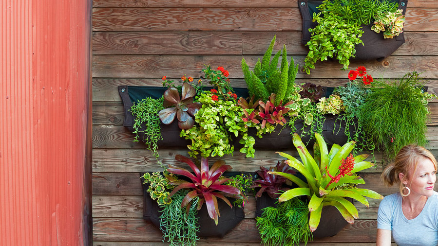
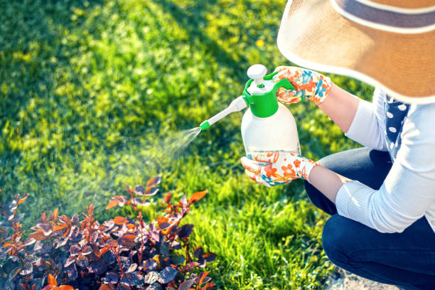
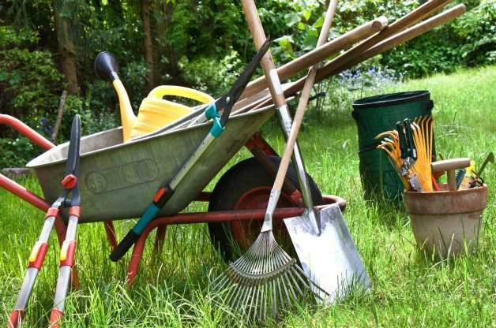

Our Services
To help you start your gardening journey, we offer the following guides and resources:
-
 Step-by-step Gardening Guides Learn the basics from soil preparation to planting.
Step-by-step Gardening Guides Learn the basics from soil preparation to planting. -
Plant Care Tips Guidance on watering, sunlight, and seasonal maintenance.
-

DIY Projects Fun activities to improve your garden space creatively.
-

Pest & Disease Solutions Easy methods for keeping your plants safe and healthy.
-

Gardening Tools Guide Recommendations for essential beginner tools.